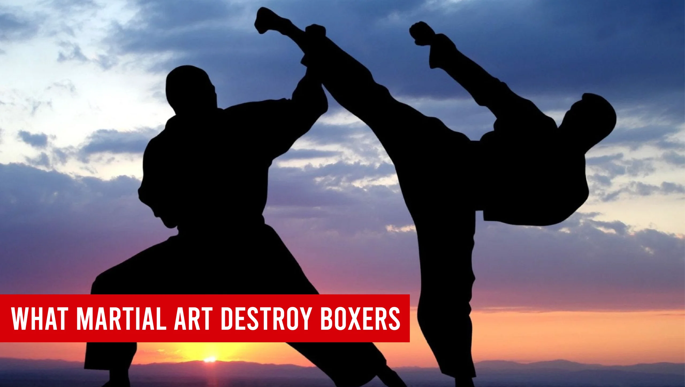
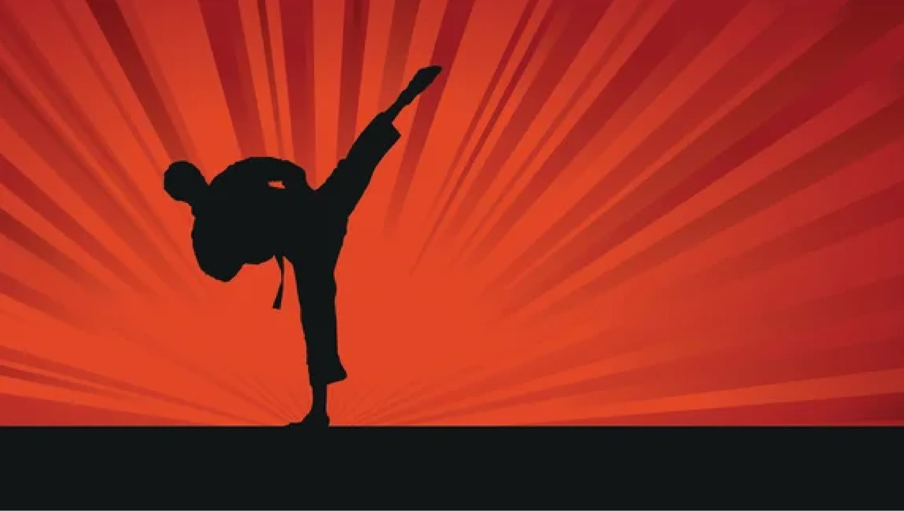
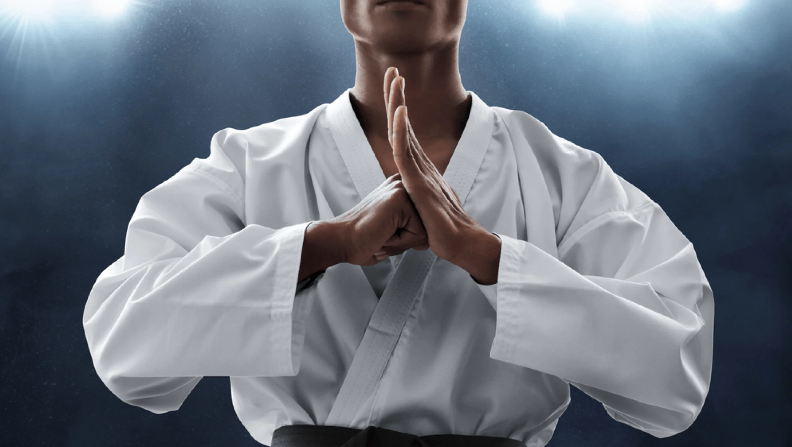
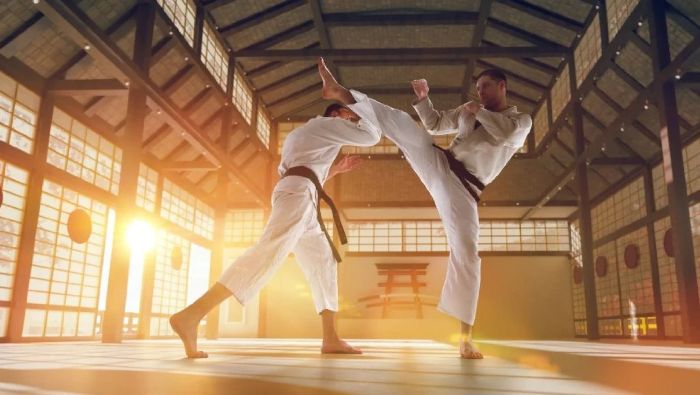

What Martial Art Destroys Boxers? Comparing Fighting Techniques for Ultimate Dominance

Introduction
In the world of combat sports, the debate over what martial art destroys boxers is both intriguing and multifaceted. Boxing has a rich history, celebrated for its powerful punches, footwork, and defensive skills. However, various martial arts styles, such as Muay Thai and Brazilian Jiu-Jitsu, present techniques that could potentially overpower a traditional boxing style. Understanding these different approaches is essential for enthusiasts. This exploration aims to analyze the unique strengths of boxing and martial arts while emphasizing the importance of adaptability in combat.
The effectiveness of a martial art against boxing often lies in the diverse techniques employed. Striking arts, such as Muay Thai and Kyokushin Karate, utilize powerful kicks and elbows that can disrupt a boxer’s rhythm and mobility. In contrast, grappling arts, particularly Brazilian Jiu-Jitsu, focus on ground control and submissions, minimizing a boxer’s ability to leverage their punching skills. Such dynamics illustrate the critical need for boxers to be versatile and adapt to varying fight styles.
Moreover, the importance of cross-training in multiple disciplines cannot be understated. Fighters who blend boxing with martial arts become more formidable competitors by integrating techniques that enhance their striking and grappling abilities. Historical encounters between boxers and martial artists have illustrated these adaptive strategies, showcasing both the strengths and weaknesses inherent in each style. Ultimately, this rich landscape of combat techniques invites a deeper examination of how martial arts can challenge and complement the world of boxing.
Understanding Boxing
Boxing is one of the oldest and most respected combat sports, with origins that can be traced back to ancient civilizations. This sport has undergone significant evolution, leading to the modern version characterized by specific techniques and structured rules. Key components of boxing include powerful punches, strategic footwork, and strong defensive maneuvers. While boxing showcases remarkable striking capabilities, its vulnerabilities emerge when faced with the diverse techniques present in martial arts. Recognizing these strengths and weaknesses is vital in discussing the question of what martial art destroys boxers.
Overview of Popular Martial Arts
Numerous martial arts exist that challenge the effectiveness of boxing. Each art brings its own set of techniques and strategies that might grant them an advantage in combat situations. Notable martial arts include:
- Muay Thai: Known for its powerful kicks and knee strikes that can significantly impact a boxer’s agility.
- Brazilian Jiu-Jitsu: Focuses on ground control and submissions, neutralizing boxers’ striking abilities.
- Kickboxing: Combines techniques from boxing and various kicking arts, creating unpredictable striking patterns.
- Karate: Emphasizes precision and quick strikes, leveraging speed to catch a boxer off guard.
Understanding these martial arts aids in answering the question of what martial art destroys boxers.
Grappling Arts: Brazilian Jiu-Jitsu vs. Boxing
Grappling techniques can effectively neutralize a boxer’s striking capability by bringing the fight to the ground. Brazilian Jiu-Jitsu (BJJ) specializes in submissions and positional control, managing opponents in a way that boxing cannot. Key aspects of BJJ include:
- Takedowns: Quickly shifting the fight to the ground where a boxer’s specialized striking is minimized.
- Submissions: Utilizing locks and chokes to control or finish a fight.
- Control: Keeping opponents immobilized, limiting their ability to strike effectively.
This dynamic underscores how grappling arts like BJJ provide strategic counters to boxing, reinforcing the relevance of what martial art destroys boxers.
The Role of Kicking: Kyokushin Karate and Muay Thai
Kicking techniques are integral to martial arts and can disrupt boxing strategies significantly. Kyokushin Karate and Muay Thai employ powerful kicks that can challenge a boxer’s mobility and control. Key points to consider include:
- Kyokushin Karate: Focuses on full-contact sparring and intense kicking techniques that can damage a boxer’s legs.
- Muay Thai: Known as the “Art of Eight Limbs,” utilizes punches, elbows, knees, and kicks to overwhelm opponents.
These martial arts introduce unpredictable elements that require boxers to adapt their techniques. This adds to the complexity of determining what martial art destroys boxers.

Adaptability in Fighting Styles
Adaptability is crucial in combat sports, as fighters often train across multiple disciplines to cultivate versatile skill sets. This cross-training enhances a fighter’s ability to respond to various styles and combat situations. For instance:
- Boxers: Learning Muay Thai can help improve kicking abilities while retaining boxing’s powerful punches.
- Martial Artists: Incorporating boxing techniques can enhance their striking speed and defensive strategies.
Fighters who can adapt and blend techniques from both disciplines gain a competitive edge in any combat scenario, fortifying the ongoing exploration of which martial art might effectively challenge boxing styles.
Psychological Factors in Combat Sports
The psychological aspect of combat sports plays a pivotal role in influencing a fighter’s performance and fight outcomes. Mental preparation techniques, including:
- Visualization: Helping fighters mentally rehearse techniques and strategies.
- Mindfulness: Assisting in maintaining focus and calm in high-pressure situations.
- Coping Mechanisms: Providing tools to manage stress and adversity during fights.
Recognizing these psychological factors allows for a deeper understanding of what martial art destroys boxers. Building mental resilience is key to succeeding in any combat sport, enhancing a fighter’s overall performance.

Historic Fights Between Boxers and Martial Artists
Examining notable fights between boxers and martial artists offers valuable insights into the effectiveness of diverse techniques. These encounters often reveal both strengths and weaknesses inherent in each fighting style. For example:
- UFC 1 (1993): Royce Gracie showcased Brazilian Jiu-Jitsu’s dominance against Art Jimmerson, who was heavily reliant on boxing.
- Conor McGregor vs. Floyd Mayweather (2017): Allowed McGregor to apply his MMA training against Mayweather’s boxing expertise.
Analyzing these historic matchups helps paint a clearer picture of combat dynamics, further informing the discussion of what martial art destroys boxers. These fights remind us that adaptability and skill are paramount in determining overall effectiveness.
Training Regimens: Boxing vs. Martial Arts
The training techniques employed in boxing and various martial arts highlight their unique strengths and weaknesses. Each style prepares fighters for competition in distinct ways. Key aspects include:
- Boxing Training: Focuses on strikes, speed, and defensive tactics, heavily emphasizing punching techniques.
- Utilizes heavy bag work, sparring, and agility drills to enhance performance.
- Incorporates a wider variety of techniques, including punches, kicks, throws, and submissions.
- Emphasizes physical conditioning, flexibility, and overall combat readiness.
Understanding these varied training regimens is crucial for exploring which martial arts may hold advantages over boxing techniques in various contexts.

Legal Regulations and Real-World Applications
Legal regulations governing boxing and martial arts significantly affect their effectiveness and strategies in real-world fights. Key differences include:
- Boxing Regulations:
- Restrict techniques primarily to strikes above the waist, focusing solely on punching.
- Favor a points-scoring system, which can lead to a more conservative approach.
- Martial Arts Regulations:
- Allow a broader range of techniques, including strikes, grappling, and submissions.
- Tend to promote adaptability in real-world self-defense scenarios due to versatility.
These regulatory frameworks illustrate the unique advantages that martial arts may have over traditional boxing techniques, providing context to discussions about what martial art destroys boxers.
Also Read Our Article: Best Martial Arts for Self-Defense: Which Style Suits You?
The Evolution of Combat Sports
The evolution of combat sports has been fascinating, reflecting a blend of diverse styles and techniques. The rise of mixed martial arts (MMA) showcases the growing popularity of fighters who integrate techniques from multiple disciplines. Observations include:
- The increasing fusion of striking and grappling skills allows fighters to tackle challenges from various styles effectively.
- This ongoing development hints at a future where the distinctions between boxing and martial arts continue to blur.
Recognizing these trends enriches our understanding of what martial art destroys boxers, as fighters increasingly demonstrate versatility in their skill sets.
Conclusion
Fighting styles continue to evolve, with boxing remaining a respected discipline in combat sports. However, through our exploration of what martial art destroys boxers, it’s evident that various martial arts possess unique strategies that can effectively challenge traditional boxing techniques. Boxers can improve their skills by learning about and adapting to other styles, fostering a blend of fighting techniques that enhances their overall performance. Observing this integration of various disciplines highlights the importance of adaptability in martial arts and boxing. The ongoing dialogue surrounding combat sports captivates enthusiasts and underscores the blend of art and sport in fighting.
FAQ's
The best martial art for beginners depends on personal goals and preferences. Brazilian Jiu-Jitsu (BJJ) is favored for its focus on technique, making it accessible for all. Karate is also a strong choice, emphasizing basic movements and self-discipline. It’s beneficial for beginners to try different classes to find what suits them best.
There is no age limit for starting martial arts! People of all ages can benefit from training. Many schools offer adult classes that cater to newcomers, allowing them to learn at their own pace and enjoy the physical and mental benefits of martial arts.
The cost of martial arts training varies by school, location, and class types. Many schools offer flexible pricing, including monthly memberships or per-class fees. It’s wise to explore different options to find a budget-friendly school that meets your needs.
Participation costs typically range from $100 to $150 per month for memberships, with per-class rates between $15 and $30. Annual memberships may be available for $800 to $1,200, often providing savings. Additionally, consider any extra fees for uniforms and equipment.
For your first day, wear comfortable athletic clothing. Most schools will provide a uniform (like a gi) for you to wear once you enroll, but you want to be ready to move in whatever you choose! Just check with the school beforehand to see if they have any specific requirements.
The time it takes to earn a belt varies widely based on the martial art and your dedication. Generally, it can range from 3 months to several years. Factors influencing this timeline include attendance, effort, and the specific belt progression system of the style you are learning.
Absolutely! Martial arts classes are intended for all fitness levels. Many schools offer beginner programs that help you gradually build your strength and flexibility, so don’t worry if you’re starting from scratch!
Train with us in Coppell
The first class is free. Shorts, a t-shirt and a water bottle. We lend the rest.
Book a free class